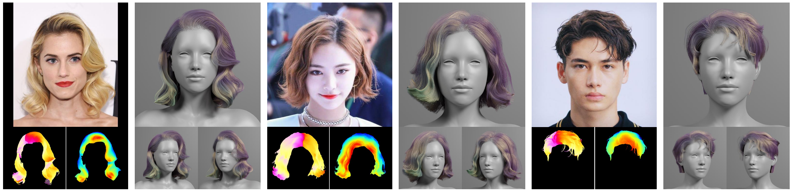
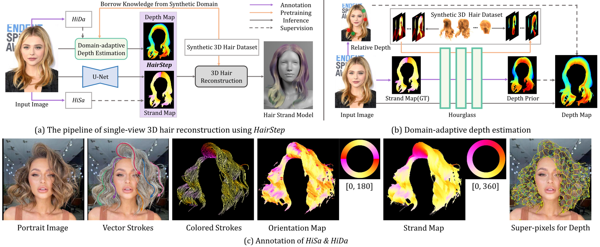
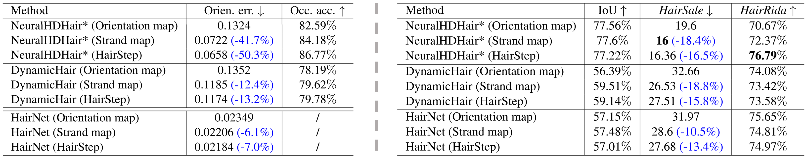

HairStep: Transfer Synthetic to Real Using Strand and Depth Maps for Single-View 3D Hair Modeling
CVPR 2023 Highlight
Yujian Zheng1, 2
Zirong Jin2
Moran Li3
Haibin Huang3
Chongyang Ma3
Shuguang Cui2, 1
Xiaoguang Han2, 1*
1FNii, CUHKSZ 2SSE, CUHKSZ 3Kuaishou Technology
*Corresponding author
[Paper]
[Video]
[Code and DataSet]
[Slides]

Given a single portrait image,
we first convert it to an intermediate representation HairStep consisting of a strand map and a depth map (shown in the bottom left and right for each example),
and then recover the corresponding 3D hair model at the strand level.
Our HairStep is capable to bridge the domain gap between synthetic and real data and achieves high-fidelity hair modeling results.
Abstract
In this work, we tackle the challenging problem of learning-based single-view 3D hair modeling.
Due to the great difficulty of collecting paired real image and 3D hair data, using synthetic data to provide prior knowledge for real domain becomes a leading solution.
This unfortunately introduces the challenge of domain gap.
Due to the inherent difficulty of realistic hair rendering, existing methods typically use orientation maps instead of hair images as input to bridge the gap.
We firmly think an intermediate representation is essential, but we argue that orientation map using the dominant filtering-based methods is sensitive to uncertain noise and far from a competent representation.
Thus, we first raise this issue up and propose a novel intermediate representation, termed as HairStep, which consists of a strand map and a depth map.
It is found that HairStep not only provides sufficient information for accurate 3D hair modeling, but also is feasible to be inferred from real images.
Specifically, we collect a dataset of 1,250 portrait images with two types of annotations.
A learning framework is further designed to transfer real images to the strand map and depth map.
It is noted that, an extra bonus of our new dataset is the first quantitative metric for 3D hair modeling.
Our experiments show that HairStep narrows the domain gap between synthetic and real and achieves state-of-the-art performance on single-view 3D hair reconstruction.
Overview

Overview of our approach. (a) The pipeline of single-view 3D hair modeling with our novel representation HairStep.
We collect two datasets HiSa and HiDa,
and propose effective approaches for HairStep extraction from real images and finally realize high-fidelity 3D hair strand reconstruction.
(b) Domain-adaptive depth estimation.
We first pre-train the Hourglass on synthetic dataset,
then generate depth priors as pseudo labels and finally obtain reasonable hair depth weakly-supervised by depth prior and annotated relative depth.
(c) Annotation of HiSa and HiDa.
Quantitative Comparisons

Our HairStep benefits different frameworks on both synthetic data (left table) and real data (right table).
Acknowledgements:
Website template is borrowed from gan_steerability.